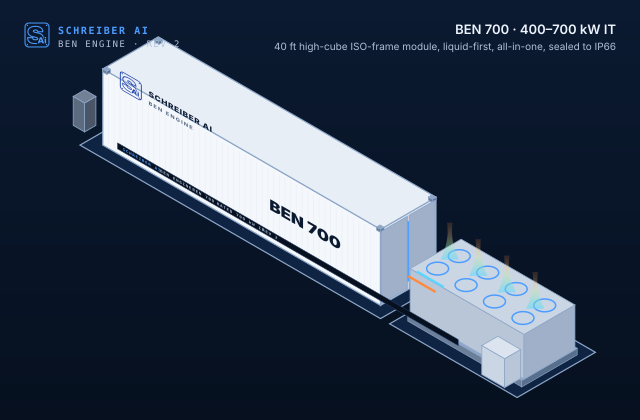
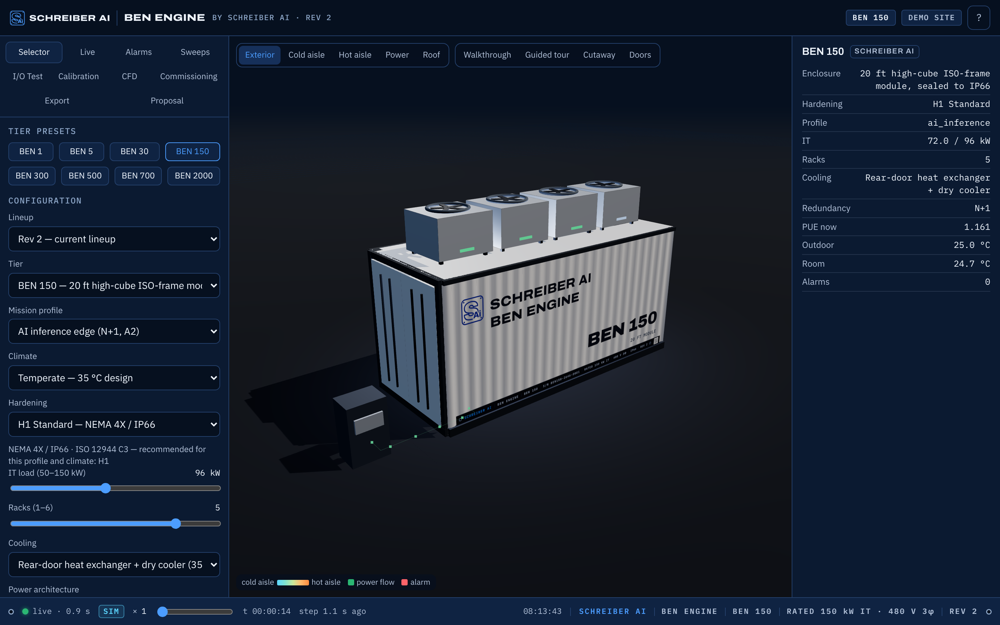
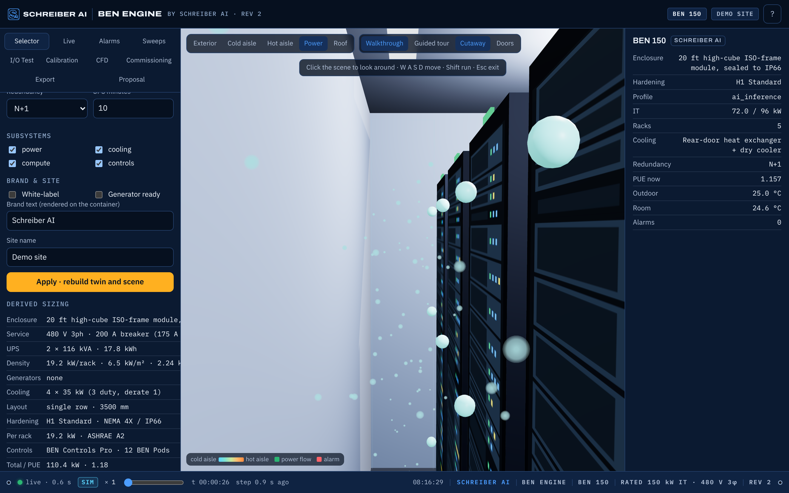
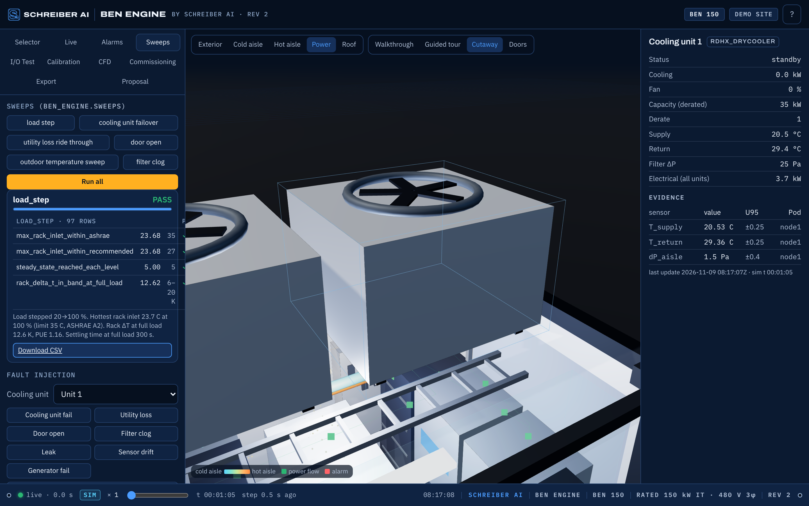
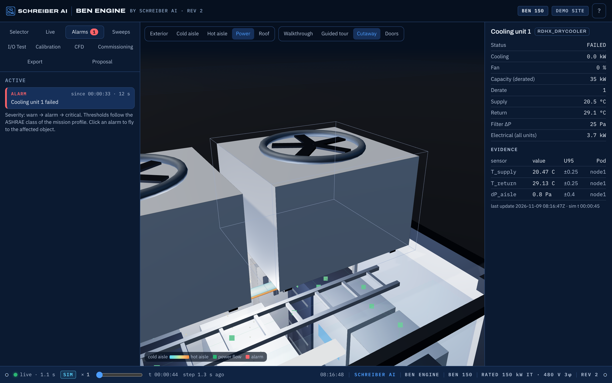

BEN 1 · 10-inch
8U desk or shelf rack
- IT load
- up to 0.6 kW
- Power
- 120 V plug-in
- Cooling
- Office air, filtered, sound-damped path
- Fits
- One DGX Spark-class desktop AI, a NAS and a firewall
Rev 2BEN Engine, by Schreiber AI
Power, liquid cooling, compute and controls built, sealed and commissioned as one product. BEN 300 puts 310 kW in a 20 ft module at up to 155 kW per rack; BEN 700 puts 705 kW in a 40 ft module, 23.6 kW per square metre of footprint, layout-checked. Up to 2 MW as three BEN 700 modules on one shared yard (BEN 2000: 2,000 kW in 15 racks, layout-checked, priced from estimates; two site items wait on the local authority and the utility). The same engineering scales down to a mini rack for a small office (BEN 1). Schreiber AI designs it, builds it, commissions it and watches it.

The lineup
The number is the nominal maximum IT power in kilowatts. The core product is the all-in-one box: power, cooling distribution, compute and controls inside one enclosure, heat rejection outside on the roof or a skid. BEN 2000 is the top of the dense range: three BEN 700 modules on a shared 12.47 kV and heat-rejection yard, one pad-mount transformer and one skid per module, sized and priced from the same configuration model (the Rev 1 BEN 2000 hall stays available for existing quotes).
Modules can be bought separately: Power (service entrance, ATS, UPS, distribution), Cooling (DX, rear-door, or direct liquid), Compute (racks and reference GPU/CPU nodes), Controls (BEN Controller, BEN Pods on the BEN Mesh, dashboard, twin, BEN Care): BEN Controls Lite (Revolution Pi, BEN 5 and BEN 30) or BEN Controls Pro (PLCnext PLC in a UL 508A panel + industrial edge computer, BEN 150, 500 and 2000; BEN 30 on request). The container, envelope and fire/safety come with any module.
New in Rev 2 · BEN 1
For an office with one or two AI boxes, a NAS and a firewall in a closet or on a shelf. BEN 1 is an indoor mini rack that plugs into a 120 V outlet and runs on office air, drawn through a filtered, sound-damped path. Any liquid cooling stays sealed inside the IT device itself. Same controls, same dashboard, same data plate as the big modules.
8U desk or shelf rack
19-inch sound-damped office cabinet
Yellow chips are empty proof slots. They fill with measured numbers from the first BEN 1 units, never with estimates.
New in Rev 2 · BEN 300 and BEN 700
For current liquid-cooled racks. Both tiers are liquid-first: direct liquid cooling with warm W45 water, coolant distribution units at N+1, and only a small share of the heat left on the air side. Power, UPS and battery, CDUs and controls ride inside the module; heat rejection sits outside on an adjacent skid. A dense tier is only sold once its real footprint passes our interference checks (single row, 900 mm egress, NEC 110.26 working space at 480 V). Until then it is reported as a study.
20 ft module, liquid-first
40 ft module, liquid-first, all-in-one
Planned as BEN 1000. With real footprints in the layout model, five racks and 705 kW fit in a 40 ft module, so the tier is named for 700 kW, as the naming rule says.
The 800 VDC power architecture stays a study option on both tiers until the test cell signs it off.
Step 1
Start with what the box is for. The profile sets the environmental class, redundancy, climate package, compliance pack and the risk list you will see next.
Step 2
Every modular data center carries these risks. We list them first so you can see which ones BEN Engine covers by design, which we monitor, and which stay with you. Filtered for the profile you picked.
Full register with likelihood, consequence and mitigation: docs/RISK_REGISTER.md.
Envelope
Weather is the first risk on the list above, so every outdoor BEN starts watertight. The envelope of every outdoor tier is rated NEMA 4X / IP66: gasketed doors with three-point latches, every penetration gasketed and hose-tested (UL 50E type 4X, test E14) before the unit ships and again after it moves, corrosion-resistant coating, a slightly pressurised interior so dust stays out. That is level H1 and it costs nothing extra. Two more levels are in the Hardening select in the configurator. BEN 1 is indoor equipment and is not hardened.
NEMA 4X / IP66 envelope, hose-tested. ISO 12944 C3 coating. Wind, snow and seismic to the climate package. Keyed access, door contacts, camera-ready. For most commercial sites.
Everything in H1 plus a 600 mm flood plinth, marine-grade C5-M coating with stainless fasteners and sacrificial anodes, sand and dust filtration with weather hoods, hurricane-rated door hardware and roof snow guards, 67 m/s (150 mph) wind, intrusion detection and lighting. For coastal, desert, arctic and hurricane sites; the configurator recommends it automatically for those climates.
Everything in H2 plus ballistic wall panels (UL 752, level 3 to 8 selectable), forced-entry rated doors (ASTM F3038), IK10 impact doors, a secure vestibule with mantrap, two-factor access, tamper detection wired to the controller and an audit trail in BEN Care, optional HEMP shielding (MIL-STD-188-125-1, 80 dB) with TEMPEST-ready cable separation, and a CMMC / NIST 800-171 controls pack. For public sector, defence, utilities and critical infrastructure. We deliver TEMPEST-ready, not TEMPEST-certified.
The hose test is written into the warranty: it is repeated every three years and after any relocation. Levels, tests and maintenance add-ons: docs/COMPLIANCE.md §15, docs/TEST_GUIDE.md E14, docs/MAINTENANCE.md §5a.
Step 3
Sizing comes from the same model that generates the drawings and the bill of materials (software/ben_engine/config.py). Prices are indicative and show how much of the total is vendor-confirmed, list price, or our estimate.
Digital twin
Every BEN ships with its digital twin. The dashboard below is the same software that runs in the box, in simulation mode: live data, 3-D walkthrough, automated test sweeps, fault injection, calibration, CFD and CSV export, with no hardware attached.




Launch the demo dashboard Runs locally: bash scripts/run_dashboard.sh then open http://localhost:8080
Process
Full process flow with owners, hold points and records: docs/PROCESS_FLOW.md.
Compliance
NEC 110.26 working space, UL 891/67 distribution, UL 1778 UPS, UL 9540 battery cabinets, NFPA 70E arc-flash labels, UL 508A BEN Controller panel (BEN Controls Pro: Phoenix Contact PLCnext PLC, industrial edge computer with TPM); BEN Controls Lite uses listed DIN-rail components (Revolution Pi). BEN 2000: 12.47 kV service to NESC and utility rules, 15 kV pad-mounted switchgear and one pad-mount transformer per module (NFPA 70 110.34, 450.3 and 450.23 clearances), 3 m between modules for the lithium battery in each (NFPA 855 / IFC 1207); the Rev 1 hall adds UL 1558 switchgear, NFPA 855 battery rooms, NFPA 110 generators and an SPCC plan.
NFPA 75/76 practices, NFPA 72 detection, NFPA 2001 clean agent, hardwired EPO and door interlocks, never on the controls network or the BEN Mesh; every BEN Pod carries a hardware root of trust (Secure Vault High) and attests before it joins.
ASHRAE TC 9.9 classes A1–A4, ASHRAE 15/34 and UL 60335-2-40 charge limits for A2L refrigerants, EPA 608 handling.
ISO 668/1496 frame, CSC re-certification after modification, ASCE 7 wind/seismic/snow by climate package; NEMA 4X / IP66 envelope hose-tested per UL 50E; H2/H3 add ISO 12944 C5-M, UL 752 ballistic, ASTM F3038 forced-entry, IK10 and MIL-STD-188-125-1 shielding. BEN 2000: site permit for the yard, and the local authority decides whether the three modules are equipment or buildings (fire separation between them is a study item); the Rev 1 hall is a building (IBC Group B / F-1, state modular approval).
IEC 62443 zones, local-first data, signed firmware, no cloud dependency, SOC 2 roadmap for the managed service.
HIPAA for healthcare, NIST 800-171/CMMC for public sector (H3 adds the physical controls), TIA-942 rated-level mapping for every tier (Rated 3 design basis for BEN 2000).
Matrix with verification methods and who certifies: docs/COMPLIANCE.md.
Next step
Schreiber AI builds it. Ben Schreiber leads your project. Send the configuration you built above and we come back with a site checklist, a fixed scope and a real quote.